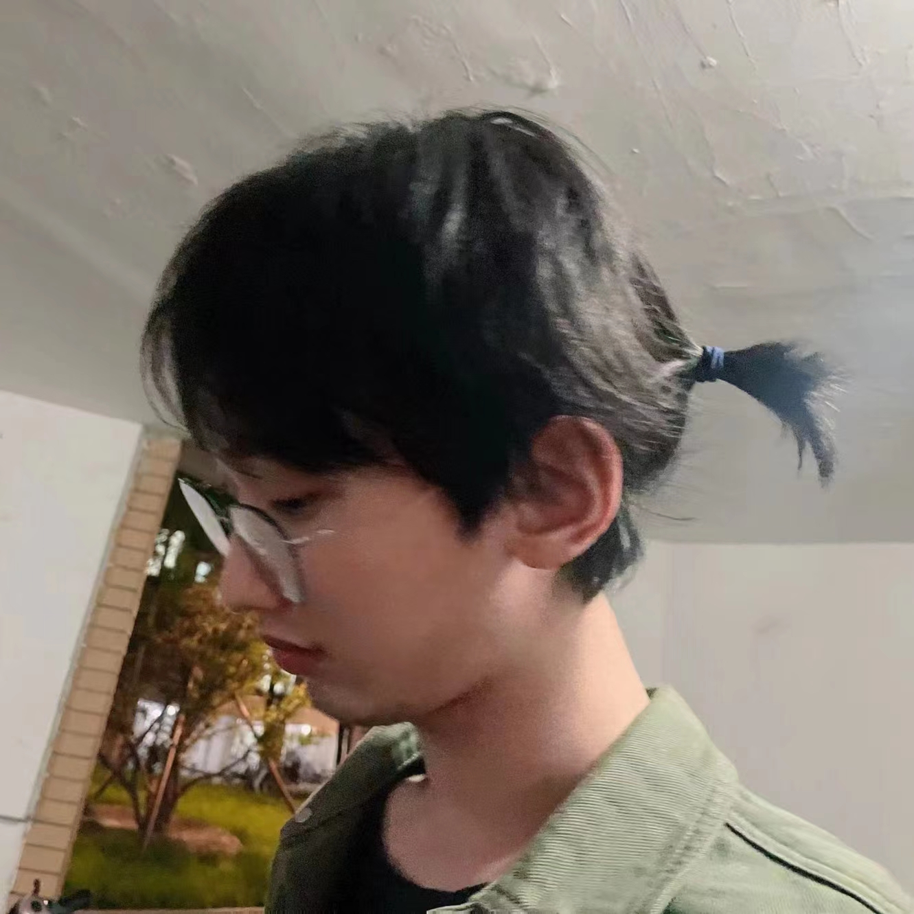

Does this website look so simple it's like it was made by hand?
"Indeed, it was lovingly stitched together, pixel by pixel, piece by piece."

Zheyu (Aqa) Zhang
Note: The pronunciation of "Aqa" is [eɪkjuːeɪ].
CS PhD
University of Illinois Urbana-Champaign @Yuxiong's lab
Research Interests
Long Video Understanding
Large Language Model
Reinforcement Learning
Robotics
Publications
OpenFE: Automated Feature Generation beyond Expert-level Performance
T Zhang, Z Zhang, Z Fan, H Luo, F Liu, Q Liu, W Cao, J Li [link] (ICML 2023)
Unbiased Gradient Boosting Decision Tree with Unbiased Feature Importance
Z Zhang*, T Zhang*, J Li [link] (IJCAI 2023)
ModuleFormer: Learning Modular Large Language Models From Uncurated Data
Y Shen, Z Zhang, T Cao, S Tan, Z Chen, C Gan [link] (preprint)
Autonomous Tree-search Ability of Large Language Models
Z Zhang, Z Ye, Y Shen, C Gan [link] (preprint)
Interests
Olympiad in Informatics [link]
Riichi Mahjong
Contact
EmaiI: zheyu-zh20 aT maiIs d0t tsinghua DoT edu dOt cn
(Trust your eyes, instead of copy paste.)
What you all have given me far exceeds what I could ever give back.